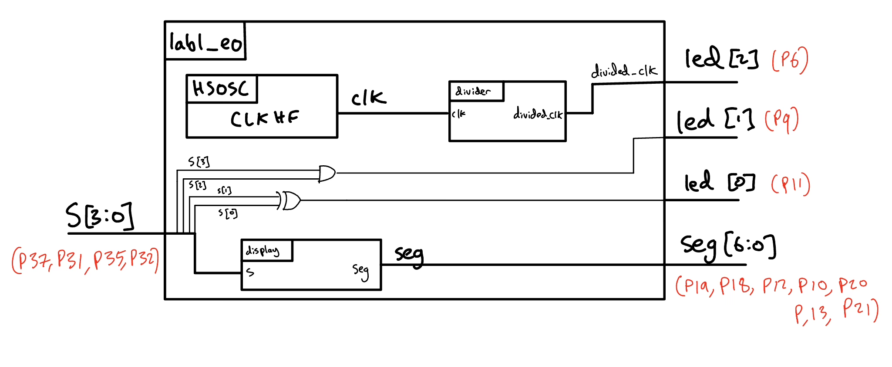
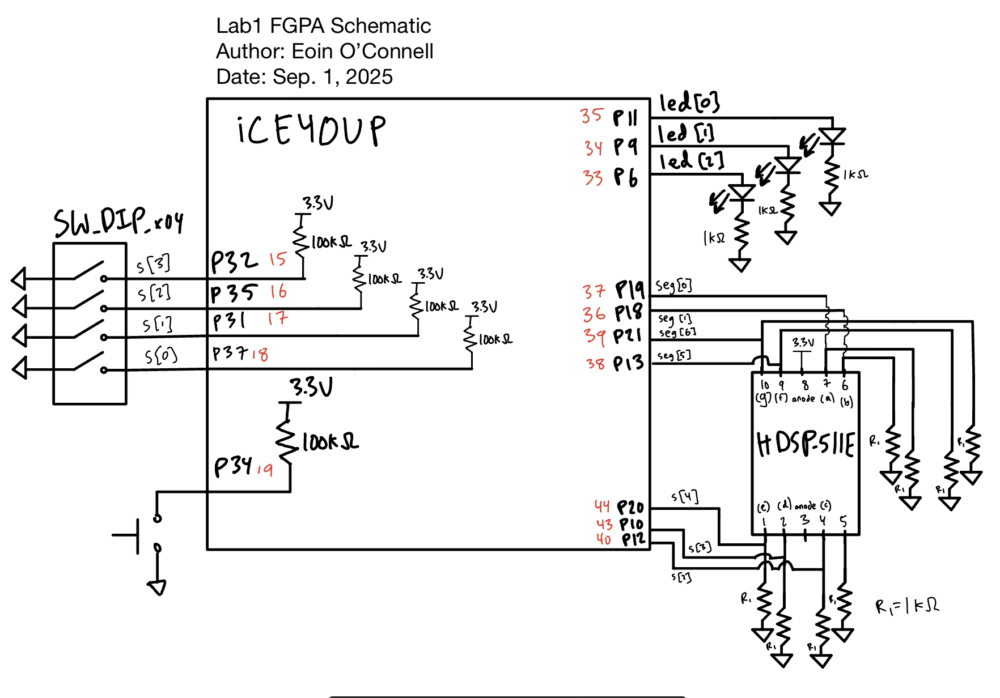

Lab 1: FPGA and MCU Setup and Testing
Introduction
This lab aimed to gain familiarity with the FPGA and MCU, and creating a simple seven segment display, as well as controlling some other LED functions.
Design and Testing Methodology
This lab consisted of two main challenges, creating a blinking light at 2.4 Hz, and a seven segment display illuminating hexadecimal digits as specified by 4 dip switches.
Blinking LED
The on-board high-speed oscillator (HSOSC) from the iCE40 UltraPlus primitive library was used to generate a clock signal at 48 MHz. Then, a counter was used to divide the high frequency clock signal down to 2.4 Hz specifically. The most simple clock dividers have a counter that overflows, and this makes it simple to divide the frequency by powers of two. Because 2.4 Hz, does not satisfy that for 48 Mhz, we need to establish the specific number of cycles that it takes take the perfect amount of time.
My design divided the clock frequency to 4.8 Hz, so that the LED would have a 50% duty cycle and a 2.4 Hz overall frequency. I used the equation: n * 1/48,000,000 = 1/4.8. Then, n = 48,000,000/4.8 = 10,000,000. Because the count starts at zero, I will keep increasing the count each cycle until it reaches 9,999,999, and then I will reset it for the next cycle and switch the LED from on to off, or from off to on.
To test this, I connected the LED prong to an oscilloscope, and measured the frequency. The measured frequency was 2.402 Hz, confirming the design’s function.
Seven Segment display
The goal was to use the 4 input DIP switches to control the seven segment display, and ensure that all digits were unique (ex: 6 and b must be distinguishable). The first step was to map each hexadeciaml digit to the seven segment display and determine which panels should be on. Then, this was implemented using a case statement in SystemVerilog which turned the truth table into hardware.
Testbenches
Both the top level module and the seven segment display module have automatic testbenches to check all possible permutations of input s[3:0], the 4 DIP switches. This simulates the output to make sure that the verilog has the expected functionality in all cases.
Additionally, I created a testbench for a modified version of the divider module (divider_test_version), which instead of dividing a clk frequency by 20,000,000, it divides it by 20. This will check that the module works as expected, while still being managable (doesn’t require simulating millions of clock cycles to check if a single bit changed).
Visual test
The seven segment display and LEDs are also most easily tested through the simple eye test. By going through all 16 combinations of the DIP switches, I can confirm that all hexadecimal digits are shown and distinct, and that the two LEDs that are a function of the swtiches work as correctly, and that the third LED blinks at around 2.4 Hz. Of course, this is a supplement to more rigorous tests, but this is quite effective at detecting bugs that could be common in both the SystemVerilog and the testvectors, because a lot of the cases were copied from one to the other.
Technical Documentation:
The code for my project can be found on my github page. Lab1 Github Repository
Block Diagram

The block diagram in Figure 1 demonstrates the overall architecture of the design. The top-level module top includes three submodules: the high-speed oscillator block (HSOSC), the clock divider module (divider), and the seven segment display decoder (display).
Schematic

Figure 2 shows the physical layout of the design. Note that led[3:0] have pins that were on the ribbon connector ports so that they could be passed to external LEDs on the breadboard due to a supply shortage of SMT diodes. Each led has a 1k \(\Omega\) current-limiting resistor to ensure the output current, ~2.6 mA, does not exceed the maximum current rating for the FPGA GPIO pins.
To calculate the pull down resistors for the seven segement display, I used the datasheet of the display itself. This I chose to use 1k \(\Omega\) as it was over the minimum safe resitance value and still provided a very bright display. Using a larger resistor in this case will only make the circuit safer, it just could reduce the brightness (even to the point of the LED not illuminating).
I was powering the LED with 3.3 V, and a max forward voltage of 2.5 V. That means that we need to dissipate up to 0.8 V through the resistor. Using V = I*R, and a max forward current of 20 mA, I get \(R > 0.8 / (20 * 10^{-3}) = 40 \Omega\). This shows that my minimum resistance is 32 \(\Omega\), which is why I picked 1k \(\Omega\) which gives me a larger buffer.
Results and Discussion
I accomplished all of the perscribed tasks: the standalone LEDs function as expected and the seven segement display shows all 16 hexadecimal digits, all controlled by the 4 DIP switches. For the 2.4 Hz pulsing LED, my oscilloscope measured 2.402 Hz frequency, but there was quite a bit of noise on the rising and falling edge of the signal. I am not sure if this small error is a measure effect, or perhaps it is comming from the oscillator itself. Regarless, this shows that the clock divider circuit is working as intended, with very minimal error.
Testbench Simulation
The first testbench is to simulate the top level module. We can see the waveforms match the expected values. Note that for the simulation led[2] is floating because the oscillator is commented out because it cannot be simulated. Therefore, the expected output is led[1:0] appended in front of seg, giving us a 9 digit expected output.
Not only do we see the wave forms match, but we get a printout that all 16 possible permutations tests passed.
Similarly for simulating the seven segment display module, we give the input switches s, and see the output seg matches the expected values.

Again, all 16 possible combinations of s matched the expectation.

Here we can see that the test verison spends 10 cycles at zero and 10 cycles at one. This divides the frequency by 20. This testbench is much easier to keep track of then trying to simulate the clock divider that counts to 10,000,000, as you would need to simulate so many more cycles just to see a change in the divided_clk signal.
Here we can see that by counting to 10 for both the LED being on and off yeilds a total reduction in frequency by a factor of 20. Thus, by counting to 10,000,000, we get a frequency reduction by a factor of 20,000,000. That brings our 4.8 MHz clock to 2.4 Hz.
Just like how the waveforms for the divided_clk and expected signals match, we get confirmation that all tests passed by the testbench output.
Conclusion
I worked on this lab for three consecutive days, totalling around 15 hours. This included around 3 hours to solder the board and get setup, a few hours working on the demos, before working on the project itself. Writting the verilog only took about 45 minutes, as the idioms are quite simple once you understand the clock divider logic. I spent around 3 hours writing up the report and making diagrams.
The FPGA succesfully controlled both the seven segment display as well as the 3 standalone LEDs. The first two LEDs perform the XOR and AND functions correctly, and the third LED blinks at 2.4 Hz as desired.
The main assignment issue was simply a shortage of parts, which made certain functions more difficult to implement and test. For me, this meant that I had no on-board LEDs so I will have to solder and test these at a later date. For the assignment itself, I found it straightforward.
AI Prototype Summary
Prompt: Write SystemVerilog HDL to leverage the internal high speed oscillator in the Lattice UP5K FPGA and blink an LED at 2 Hz. Take full advantage of SystemVerilog syntax, for example, using logic instead of wire and reg.
The code generated by ChatGPT base free model, which I believe to be GPT-5 but the website does not specify for my free acount. The file can be viewed here on my github.
The first thing I was impressed by was that the AI seemed to get the clock oscillator correct. Here you can see the difference between my code and the AI output from the simple prompt.
AI Clock Generation:
HSOSC #(
.CLKHF_DIV("0b00") // 48 MHz (00), 24 MHz (01), 12 MHz (10), 6 MHz (11)
) hf_osc_inst (
.CLKHF(clk_hf),
.CLKHFEN(1'b1), // enable output
.CLKHFPU(1'b1) // power up oscillator
);My Clock generation (from lab1 source code):
HSOSC hf_osc (.CLKHFPU(1'b1), .CLKHFEN(1'b1), .CLKHF(clk));Furthermore, the clock divider function was very simple and similar to what I would have wrote:
// Counter divider
logic [24:0] counter; // enough bits for ~0.5s interval at 48 MHz
logic led_reg;
always_ff @(posedge clk_hf) begin
counter <= counter + 1;
// Toggle LED at ~2 Hz (0.5s high, 0.5s low)
if (counter == 24_000_000) begin
led_reg <= ~led_reg;
counter <= 0;
end
endFor the clock to get down to 2 Hz, my math is that n * 1/48,000,000 = 4 (2 times the clock frequency so that the duty cycle is 50% and the overall frequncy is 2 Hz). This means that it should count 12,000,000 cycles before flipping. The way the AI did it was that the overall frequency is 1 Hz because it spends 0.5s high and 0.5s low, which is 1 Hz as each cycle takes 1 s.
Besides that minor misunderstanding, I was quite impressed by the AI output.
When I synthesized the AI ouput in Radiant, it compiled and synthesized with no errors on the very first try. I think that with slightly more guidance on the clock divider instructions, then this would work as expected.
I was using Cursor extensively over the summer at my internship at Tenstorrent, and I found it extremely powerful because it has context of your other files and you don’t need to copy and paste back and forth from a website. I will try to get a student license, but the first half of this course is no AI allowed, so I will only be able to use it on the project.